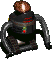

Cleaning Bot
Cleaning Bot
|  | |
|---|---|
| A custom Robobrain unit re-developed and designed by Dr. Musashi. | |
| Effect | A NPC That will sort stuff in your Base/Tent. |
| Weight | 4000 grams |
| Base Price | 10000 |
| Where to Find? | Randal in Vault City sells it. |
| Notes | Brand new feature that come to Fonline 2 world not so long ago. This Bot will make your life easier! This item got separate article. Click on image to read it. |
Description
Base management is always huge issue in FOnline2. Every expedition to any PvE and PvP mission will occur in change on your amount of gear (in general you should expect that you will earn gear on PvE and lose stuff on PvP...well unless your name is Musashi in case of which you should probably know about equipment obtaining more than any walking being on this planet). In such circumstances, of very dynamic changes to your state of possession you will usually be forced with a task of cleaning...brrr.
You should keep your base clean so you can know how many copies of certain items you have, so you can quickly find items that you need right now. The FOnline2 is quite similar to real life in this aspect. Just like in real life there is a life hack for this. In Real life you can use your girlfriend to clean up for you. Here you can use...a cleaning bot!
Obtaining a Cleaning Bot is quite simple. Just go to Vault City, to NPC named Randal (Inner part of town), ask him about bot being showed in front of his shop and pay him 10k bottle caps. Now you have your very own robot - for now being stored in your inventory.
Go to your Tent or Base. Then drop it from inventory into the ground. To Deploy bot you need to be base manager of base in which you want him to work. Prepare few containers (You should have like 8 of those), if your base or tent don't have any containers you will need to craft them.
Containers set? Great. Now talk to the bot, tell him which things you expect him to pick. Then tell him to get to work. Firstly he will gather up stuff, then segregate it into proper containers. He will also repair any item he find damaged with 100% chance of success. Unlike human, cleaning bot can put stuff beyond container weight limit. Don't ask how - you don't want to know.
JTS vs Bots
Few months ago Wesan challenged Junktown Scouts to do the biggest mess they can create, he told us that he will be able to clean any mess we will try to do. JTS farmed Rogues for few hours on purpose throwing stuff in as messy way as it's possible. The end result was pretty epicly chaotic and enough said, we were pretty sure of victory. At first Wesan tried with one robot - but it was not enough to handle Junktown Scouts, then Wesan cheated by creating multiple copies of bots, and in the end won the challenge.